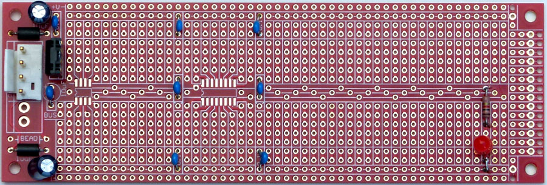
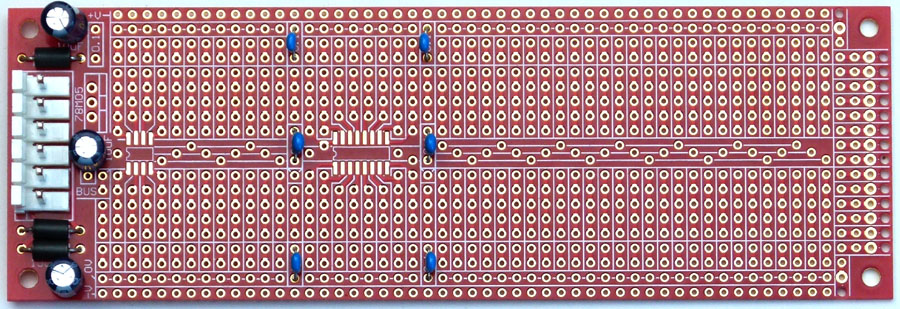
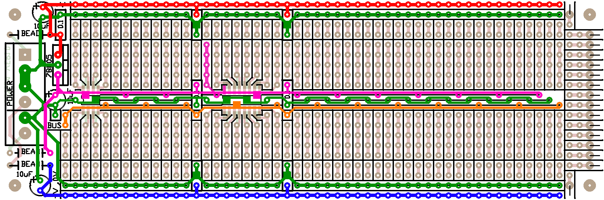
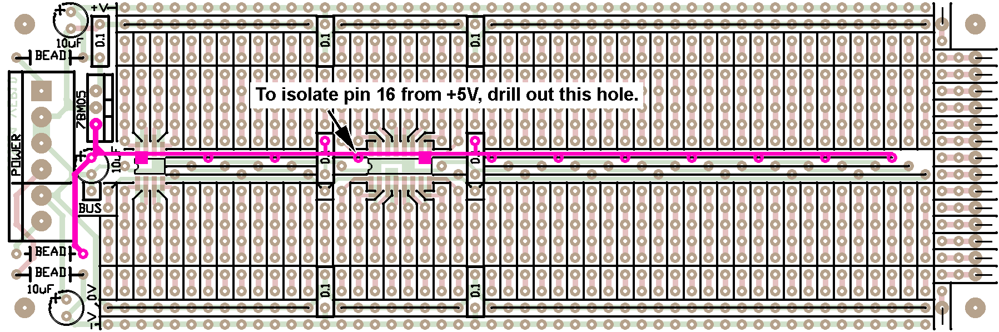

Breadboard / Prototyping board
for music synthesizers.


Construction

Color legend (assuming +/-15 volts).
- Red: +15 volts
- Green: 0 volts/ground
- Pink: +5 volts. Note that pin 16 of the SO-16 is preconnected to the +5 bus.
- Orange: Free bus. Use it for clock signals or something else that you wish to distribute along the length of the PCB.
- Blue: -15 volts

| Pad 16 of the SO-16 location is pre-connected to +5V, suitable for logic chips. If you wish to use a quad op-amp or other 14 pin linear device, mount it to the left, so pad 16 is not used. To isolate pad 16 from +5V, carefully drill out this hole. You only need to isolate the through-hole plating from the pad. It can be done on either side. A simple twist of a 1.5mm drill bit held between your fingers is enough to do the job. Check for continuity to made sure you have succeeded. Take care not to cut any of the traces connected to the pad by over-drilling. Click here for an enlarged version.
|
The board can be used with either +/-12 volts or +/-15 volts, although the power connectors used are usually associated with +/15 volts.
On the rear of the PCB are various surface mount pads. These are to allow connection to the rails and IC pins under the SMT packages. There are also four pads associated with decoupling capacitors, allowing 1206 SMT decoupling capacitors to be used in these locations.
There are several power supply configurations possible with the board.
Of note is the two variants of +5.
- If you have a power bus that uses the MOTM standard for +/-15/+5, you can install a six pin 0.156 header, three ferrite beads and three 10uF decoupling capacitors.
- If you only have +/-12 volt or +/-15 volt power available, install a four pin 0.156 header, two ferrite beads, two 10uF decoupling capacitors, two 100n capacitors and a 78M05 (or similar) regulator. Refer to the photographs for component positioning.
Notes:
- 330R refers to 330 ohms. 100n = 0.1 uF, etc.
- The module will work on +/-12 volts or +/-15 volts.
- PCB info: 6" x 2" with 3mm mounting holes 0.15" in from the edges.
- Please e-mail me if you find any errors.
|
Parts list for PCB used with 6 pin power
| Capacitors |
|---|
| 100nF (=0.1uF) Ceramic Monolithic | 6 |
| 10uF electrolytic | 3 |
| Misc. |
|---|
| Ferrite Bead | 3 |
| MTA-156 connector 6Pin | 1 |
| MTA-156 header 6Pin | 1 |
| CGS124 VER1.0 PCB | 1 |
|
|
|
Parts list for full module using 4 pin power
| Capacitors |
|---|
| 100nF (=0.1uF) Ceramic Monolithic | 8 |
| 10uF electrolytic | 2 |
| Semi's |
|---|
| 78M05 or sim. | 1 |
| Misc. |
|---|
| Ferrite Bead | 2 |
| MTA-156 connector 4Pin | 1 |
| MTA-156 header 4Pin | 1 |
| CGS124 VER1.0 PCB | 1 |
|
|
Parts list
This is a guide only. Parts needed will vary with individual constructor's needs.
If anyone is interested in buying these boards, please check the PCBs for Sale page to see if I have any in stock.
Can't find the parts? See the parts FAQ to see if I've already answered the question. Also see the CGS Synth discussion group.
Article, art & design copyright 2013 by Ken Stone
Modular Synth Home Disclaimer
|